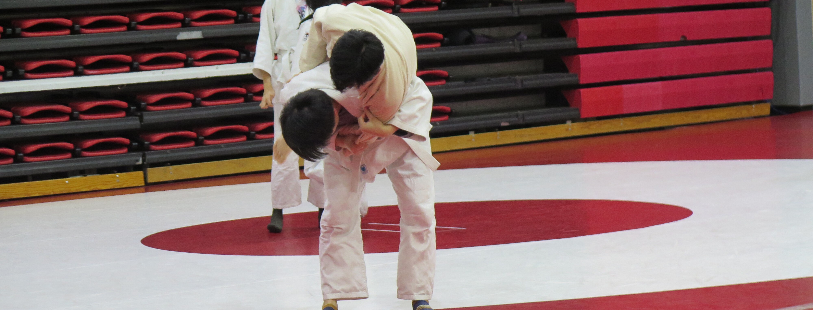
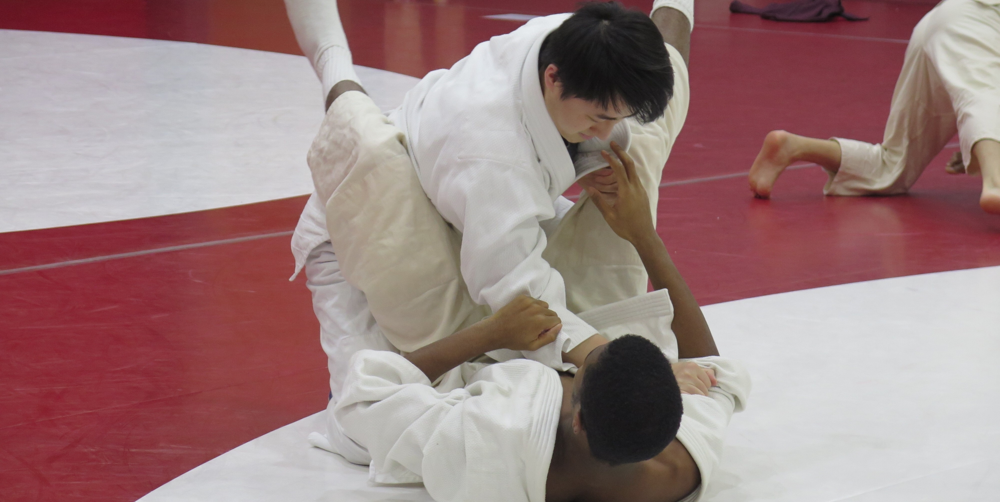
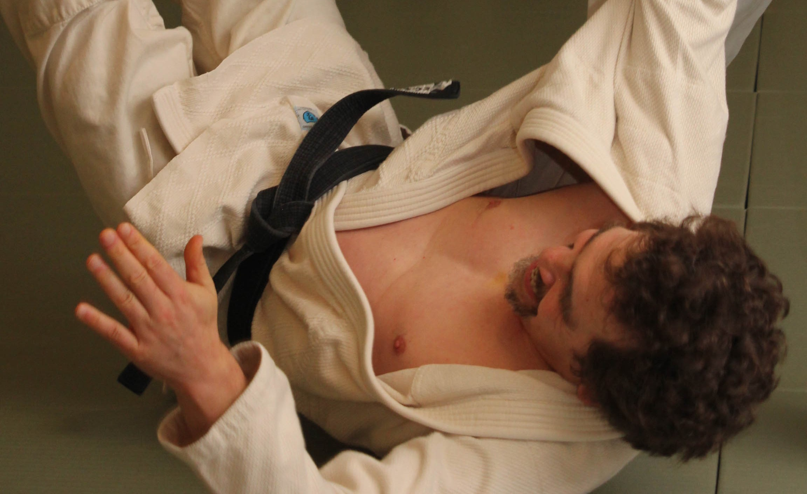
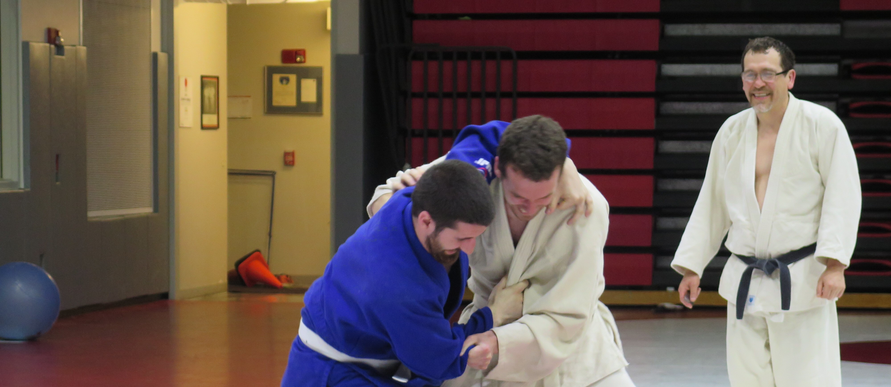
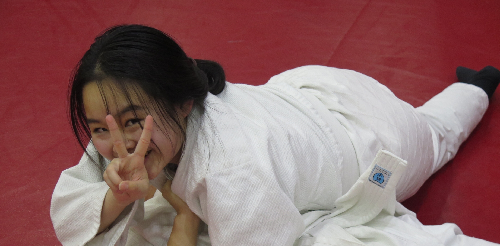
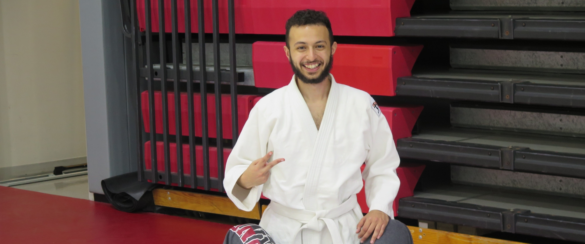

History
Judo is a combat sport that focuses not just on physical strength but on technique and discipline. It is a sport involving both throwing as well as ground techniques and submissions. Judo originated in Japan when the founder Jigaro Kano attempted to turn the martial arts of the samurai into something that can be practiced safely. Judo does not involve any kind of striking or weapons. Instead, judo translates balance and power into throwing techniques. Even so, judo requires time, effort, and energy to master. Judo is used around the world not just as a sport or form of discipline but also as professional training for the army and police forces.